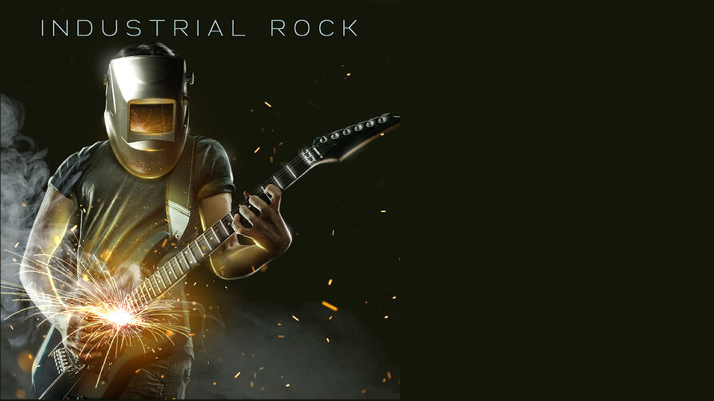

ROCK INDUSTRIAL
El Rock Industrial es un género musical que se caracteriza por su combinación de elementos del rock and roll, el punk, la música electrónica, el metal y la música industrial. Este género se enfoca en la experimentación sonora, la producción de sonidos duros, pesados y oscuros, y una lírica que a menudo trata temas como la alienación, la tecnología, la decadencia y la violencia.
El Rock Industrial se originó en la década de 1970, cuando grupos de rock como Throbbing Gristle y Cabaret Voltaire comenzaron a experimentar con la música electrónica y los sonidos de la industria. El término “Rock Industrial” fue acuñado por la banda británica industrial rock Throbbing Gristle en la década de 1970 para describir su música.
En los años 80, el género se popularizó gracias a bandas como Ministry, Skinny Puppy, y Nine Inch Nails, quienes fusionaron el rock industrial con la música electrónica, el metal y el punk. Estos grupos también incorporaron la imagen, el arte y la moda en sus presentaciones en vivo, creando una estética distintiva que se convirtió en una parte integral del género.
Los instrumentos más comunes para este tipo de música son la guitarra eléctrica, bajo, batería. Hoy en día, el Rock Industrial continúa siendo un género importante y activo en la música contemporánea, con una base de fanáticos comprometidos y una gran cantidad de artistas influyentes en todo el mundo. Entre sus representantes más destacados se encuentran como stigmata, more human, The beautiful people, head like a hole,Push It,Dig It.
